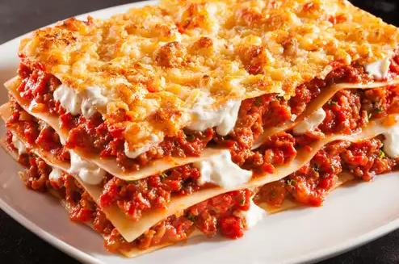

Lasagna

Description
This recipe will teach you how not to ruin God's gift to humanity.
Ingredients
- dough
- tomato stuff
- cooking skills
- patience
- Italian blood
Steps
- Look up an actual recipe on a 'real' website.
- Be convinced that this process will be an excellent use of your time/energy.
- Whip something up.
- Punch something down.
- Hands off the red w(h)ine, rummy!
- Have an oven and know how to use it.
- Use it.
- Smell the victory.
- Serve the victory.
- Consume the victory.
- Be the victor.
- You gonna eat that? I can help if you want.